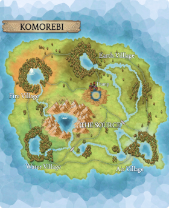

Vivere a Komorebi è un’esperienza unica, sia per il forte contatto con la natura, sia per i vari servizi presenti in tutta l’isola. Infatti, sono diverse le stazioni, i bar e i ristoranti che permettono di godere a pieno dell’isola, senza però rinunciare alle comodità e agli intrattenimenti di una qualsiasi città turistica.
Al centro dell’isola è presente la sorgente principale da cui la comunità di Komorebi ricava energia idroelettrica. Oltre alla sorgente principale, sono presenti altre due sorgenti: la sorgente Verde e la sorgente Nascosta. Sono fonti di acqua potabile ed ognuna presenta caratteristiche diverse che le rendono uniche al mondo.
Scopri di piùGli abitanti di Komorebi hanno molto a cuore la tematica ambientale. Choose to reuse è un servizio dell’isola che dà nuova vita e valore ai rifiuti tramite un riuso creativo noto come “upcycling”. I rifiuti vengono raccolti e selezionati dagli abitanti, per poi essere trasformati in nuovi prodotti riutilizzabili. I punti di raccolta sono collocati in vari punti strategici dell’isola e ognuno svolge attività di riuso diverso.
Scopri di più